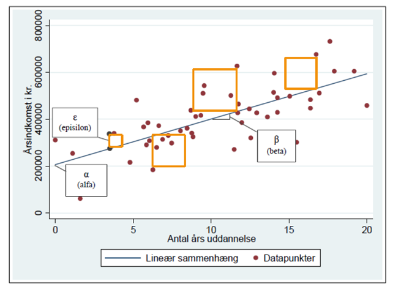
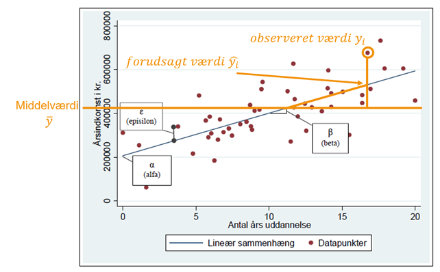

df$koen n percent
Mand 615 0.5194257
Kvinde 569 0.4805743Lineær regression
Statistik E24 (15 ECTS)
ved Mikkeline Munk Nielsen
Program
Diskrete variable i lineær regressionsanalyse
Kodning af dummy-variable
Forlæns modelsøgning
Lineær regression recap
Sidst arbejde vi med en simpel lineær regressionsmodel med en afhængig variabel 𝑌 og en uafhængig variabel 𝑋:
\[Y=\alpha + \beta*X+\epsilon\]
Og en multiple lineær regressionsmodel, hvor vi tilføjede en kontrolvariabel 𝑍:
\[Y= \alpha+\beta*X+\delta* Z+\epsilon\]
Lineær regression recap
I den simple lineær regressionsmodel undersøger vi sammenhængen mellem 𝑌 og 𝑋. Parameteret 𝛽 beskriver den ubetingede lineære sammenhæng mellem dem:
\[Y=\alpha + \beta*X+\epsilon\]
I den multiple lineær regressionsmodel undersøger vi om sammenhængen mellem 𝑌 og 𝑋 består, når vi tager højde for et tredje forhold 𝑍.
\[Y= \alpha+\beta*X+\delta* Z+\epsilon\]
Parameteret 𝛽 beskriver nu den betingede lineære sammenhæng mellem dem 𝑌 og 𝑋, når vi kontrollerer for 𝑍.
Lineær regression recap
\[Indkomst = \alpha+\beta*uddannelse+\delta* alder+\epsilon\]
Summeøvelse 10 min: hvad er fortolkningen af følgende parametre (og fejlledet)?
\(\alpha\):
\(\beta\):
\(\delta\):
\(\epsilon\):
Lineær regression recap
\[Indkomst = \alpha+\beta*uddannelse+\delta* alder+\epsilon\]
Summeøvelse 10 min: hvad er fortolkningen af følgende parametre (og fejlledet)?
\(\alpha\): Den gennemsnitlige indkomst, når antal års uddannelse = 0 og alder = 0
\(\beta\): den gennemsnitlige ændring i indkomst, hver gang antal års uddannelse stiger med 1 (kontrolleret for alder)
\(\delta\): den gennemsnitlige ændring i indkomst, hver gang alder stiger med 1 (kontrolleret for antal års uddannelse)
\(\epsilon\): den gennemsnitlige afvigelse mellem respondenternes observerede indkomst og den indkomst, som regressionsmodellen forudsiger, at respondenten har, på baggrund af 𝛼 og 𝛽
Lineær regression recap
Indtil videre har vi slet ikke talt om variablenes måleniveau i lineær regression… Det laver vi om på nu!
Måleniveauer i lineær regression
Den afhængige variabel 𝑌 er altid kontinuert (intervalskaleret)
\[Y= \alpha+\beta*X+\delta* Z+\epsilon\]
Uafhængige variable (herunder kontrolvariable) kan både være kontinuerte og diskrete (altså både intervalskalerede, nominelle eller ordinale)
Principielt er der ingen forskel i fortolkningen af koefficienter for hhv. kontinuerte og diskrete variable. Koefficienter beskriver altid ændringen i 𝑌 for én enhedsændring i 𝑋. Men i praksis er der en forskel…
Måleniveauer i lineær regression
Diskrete variable kodes som binære ”dummy variable”, der kun kan tage værdien 0 eller 1
En dummy for køn kan f.eks. laves til en ny variabel ”kvinde”, der antage værdien 1, hvis respondenten er en kvinde, og værdien 0, hvis respondenten er en mand.
\[Y= \alpha+\beta*Kvinde+\epsilon\]
Her vil 𝛽 beskrive ændringen i indkomst, hvis variablen ”kvinde” går fra 0 (mand) til kvinde (1).
Måleniveauer i lineær regression
Vi kan dermed regne os frem til den forventede indkomst for hhv. mænd og kvinder:
\(Indkomst= \alpha+\beta*Kvinde+\epsilon\)
Mænd:
\(Indkomst_{mand}= \alpha+\beta*0+\epsilon\)
\(Indkomst_{mand}= \alpha+\epsilon\)
Kvinder:
\(Indkomst_{kvinde}= \alpha+\beta*1+\epsilon\)
\(Indkomst_{kvinde}= \alpha+\beta+\epsilon\)
Måleniveauer i lineær regression
Med andre ord vil konstantleddet 𝛼 repræsentere den forventede værdi på Y, når dummy variablen tager værdien 0.
\[Indkomst= \alpha+\beta*Kvinde+\epsilon\]
Det er præcis ligesom med kontinuerte variable. Konstantleddet 𝛼 repræsenterer altid den forventede værdi på den afhængige variabel Y, når alle uafhængige variable = 0.
Måleniveauer i lineær regression
For diskrete variable med mere end to kategorier kodes hver kategori også til sin egen dummy variabel
Tag f.eks. en nominel variabel der måler ens persons ansættelsestype i tre kategorier, lønmodtager, selvstændig eller hjemmegående (familie):
\[ \Omega{=Lønmodtager, selvstændig, familie} \]
Disse tre kategorier laves til hver sin dummy variabel
\[ X_1 = lønmodtager, X_2=selvstændig, X_3 = familie \]
Dummy fælden
- Her opstår dog et problem! En respondent er enten lønmodtager, selvstændig eller arbejder i familien. Man kan altså kun have værdien 1 på èn af de tre variable.
\[ X_1 = lønmodtager, X_2=selvstændig, X_3 = familie \]
I praksis betyder dette, at man er nød til at udelade en af kategorierne/dummierne fra sin regressionsmodel. Ellers kommer man i problemer med noget der hedder multikollinaritet! Det vender vi tilbage til…
Af samme årsag kan man heller ikke både have en “mande” og en “kvinde” dummy i samme model.
Dummy fælden
\(X_1 = lønmodtager, X_2=selvstændig, X_3 = familie\)
Regressionsmodellen kommer til at se således ud, når vi udelukker \(X_1 = lønmodtager\)
\(Y=\alpha+\beta_1*X_2+\beta_2*X_3+\epsilon\)
\(Y=\alpha+\beta_1*selvstændig+\beta_2*familie+\epsilon\)
I denne model vil den udeladte kategori \(X_1 = lønmodtager\) ende med at ligge i konstantleddet \(\alpha\)
Det giver mening, fordi 𝛼 altid måler den gennemsnitlige værdi på 𝑌, når værdien på alle 𝑋´er = 0. Hvis man har værdien 0 på både 𝑋1 (selvstændig) og 𝑋2 (familie), så er det fordi, at man har værdien 1 på den udeladte kategori 𝑋3 (lønmodtager).
Dummy fælden
\(X_1 = lønmodtager, X_2=selvstændig, X_3 = familie\)
Regressionsmodellen kommer til at se således ud, når vi udelukker \(X_1 = lønmodtager\)
\(Y=\alpha+\beta_1*X_2+\beta_2*X_3+\epsilon\)
\(Y=\alpha+\beta_1*selvstændig+\beta_2*familie+\epsilon\)
Fortolkningen af parametrene i modellen er dermed:
\(\alpha\): den forventede indkomst for en lønmodtager (den udeladte kategori)
\(\beta_1\): forskellen i den forventede løn fra referencekategorien 𝛼 (lønmodtager) til selvstændige
\(\beta_2\): forskellen i den forventede løn fra referencekategorien 𝛼 (lønmodtager) til at arbejde i familien
Dummy fælden
Hvis man glemmer at udelukke en kategori går man i den såkaldte ”dummy-fælde”.
HVIS I gør det… Så smider R selv en kategori ud.
Kodning af dummy-variable
Princippet med dummier er, at man konstruerer en binær variabel for hver kategori på en disktret variabel. Disse binære variable tager enten værdien 0 eller 1. En variabel for køn med to kategorier, Mand og Kvinde, kodes til to nye variable:
Mand
Kvinde
Respondenter med værdien “Kvinde” på den oprindelige variabel køn, tager værdien 1 på den nye variable Kvinde. Mænd tager værdien 0. Det omvendte gælder, på variablen Mand.
Kodning af dummy-variable
Før vi laver dummier af en diskret variabel, skal vi danne os et overblik over dens kategorier. Start derfor med at lave en tabel over kategorierne på variablen:
Variablen har to kategorier, “Mand” og “Kvinde”. Vi konstruerer derfor to nye variable - én for hver kategori på den oprindelige variabel - og tilføjer dem til datasættet.
Kodning af dummy-variable
Vi bruger funktionerne mutate() og ifelse() til omkode og/eller at skabe nye variable og tilføje dem til datasættet.
Vi har nu tilføjet to dummy-variable til datasættet:
Øvelse i dummy-variable
Åben ESS datasættet og kod dummy-variable for variablen udd
df$udd n percent
Grundskole 213 0.1798986
Ungdoms-/erhvervsuddannelse 401 0.3386824
Mellemlang videregående 427 0.3606419
Lang videregående 143 0.1207770Estimér derefter følgende regressionsmodel:
\(Indkomst=\alpha+\beta_1*{ungdoms\_erhvervsudd}+\beta_2*{ml\_videregående}+\beta_3*{lang\_videregående}+\epsilon\)
Giv fortolkning på parametrene: \(\alpha, \beta_1, \beta_2,\beta_3\)
Øvelse i dummy-variable
df <- df %>% mutate(
grundskole = ifelse(udd=="Grundskole",1,0),
ung_erhv = ifelse(udd=="Ungdoms-/erhvervsuddannelse",1,0),
ml_vid = ifelse(udd=="Mellemlang videregående",1,0),
lang_vid = ifelse(udd=="Lang videregående",1,0))
df %>% select(udd, grundskole, ung_erhv, ml_vid, lang_vid) %>% head()# A tibble: 6 × 5
udd grundskole ung_erhv ml_vid lang_vid
<ord> <dbl> <dbl> <dbl> <dbl>
1 Grundskole 1 0 0 0
2 Mellemlang videregående 0 0 1 0
3 Ungdoms-/erhvervsuddannelse 0 1 0 0
4 Lang videregående 0 0 0 1
5 Mellemlang videregående 0 0 1 0
6 Ungdoms-/erhvervsuddannelse 0 1 0 0Øvelse i dummy-variable
model <- lm(net_indkomst ~ ung_erhv + ml_vid+lang_vid, data=df)
library(texreg)
(texreg::screenreg(list(model), include.ci=F))
=========================
Model 1
-------------------------
(Intercept) 10975.65 ***
(504.65)
ung_erhv 3140.75 ***
(624.46)
ml_vid 7146.12 ***
(617.82)
lang_vid 12199.98 ***
(796.24)
-------------------------
R^2 0.20
Adj. R^2 0.20
Num. obs. 1184
=========================
*** p < 0.001; ** p < 0.01; * p < 0.05Forlæns modelsøgning
I lineær regressionsanalyse har vi derfor typisk én hovedsammenhæng, som vi fokuserer på. Sammenhængen mellem ét enkelt 𝑋 og et 𝑌
\[Y=\alpha + \beta_1*X_1+\epsilon\]
Herefter tilføjer vi gradvist kontrolvariable for at forsøge at forklare den simple lineære sammenhæng mellem 𝑋 og 𝑌:
\(Indkomst = \alpha+\beta_1X_1+\beta_2X_2+\beta_3X_3+\epsilon\)
\(Indkomst = \alpha+\beta_1X_1+\beta_2X_2+\beta_3X_3+\beta_4X_4+\epsilon\)
Denne metode kaldes forlæns modelsøgning. Pointen er, at fokusere på ændringer i
koefficienten for \(\beta_1\) fra model til model.
Forlæns modelsøgning
I denne type af modelsøgning kalder man det parameter, som man hovedsageligt er interesseret i for POI (parameter of interest)
\(Indkomst = \alpha+\beta_1X_1+\epsilon\)
\(Indkomst = \alpha+\beta_1X_1+\beta_2X_2+\epsilon\)
\(Indkomst = \alpha+\beta_1X_1+\beta_2X_2+\beta_3X_3+\epsilon\)
I dette eksempel ville \(\beta_1\) tilhørende \(X_1\) være POI, mens de øvrige parametre og uafhængige variable vil indtage rollen som kontrolvariable.
Forlæns modelsøgning
\[Indkomst = \alpha+\beta_1X_1+\beta_2X_2+\beta_3X_3+\beta_4X_4\epsilon\]
- Hvis der er en sammenhæng mellem POI \(X_1\) og kontrolvariabel \(X_2\), og \(X_2\) og den afhængige variabel \(Y\), så vil koefficienten af POI \(X_1\) ændre sig, når \(X_2\) inkluderes i modellen.
- Ændringen i POI \(X_1\) kan tilskrives den del af sammenhængen mellem POI \(X_1\) og \(Y\) som forklares af \(X_2\). Det samme gælder for \(X_3\) og \(X_4\) osv.
Forlæns modelsøgning
Hvornår er en kontrolvariabel så vigtig at have med i sin model?
1) Når dens parameterestimat er signifikant: dvs. den forklarer noget af variationen i \(Y\)
eller
2) Når den er signifikant og ændrer parameterestimatet for POI: dvs. den er en aktiv confounder i sammenhængen mellem POI og \(Y\)
Hvis den er signifikant, men ikke ændrer parameterestimatet for POI, kan det stadig være relevant at medtage variablen af hensyn til at bygge en regressionsmodel, der kan bruges til forudsigelse fremfor forklaring.
Sammenligning af modeller
Når vi har afprøvet flere forskellige modeller vil vi gerne kunne sige noget om, hvilken model der er bedst.
I lineær regressionsanalyser bruger man determinationskoefficienten \(R^2\) til at måle på en models ”forklaringskraft”
\(R^2\) udtrykker andelen af variation i den afhængige variabel Y, der kan forklares af den eller de uafhænige variable Lad os lige gennemgå for forståelsens skyld, hvordan den udregnes…
Forklaringskraft
Lineær regression ”fitter” den linje, som minimerer den samlede afstand til datapunkterne
På engelsk kaldes metoden ”OLS”. Det står for Ordinary Least Squares eller mindste kvadraters metode
Det hedder mindste kvardraters metode, fordi linjes lægges der, hvor summen af de kvardrerede afstande til datapunkterne er mindst

Forklaringskraft
Man skelner mellem:
Total sum of squares (TSS):
Summen af afstanden fra de observerede værdier til middelværdien \(\sum(y_i-\bar{y})^2\)Estimated sum of squares (ESS):
Summen af afstanden fra de forudsagte værdier til middelværdien \(\sum(\hat{y}-\bar{y})^2\)Residual sum of squares (RSS)
Summen af afstanden fra de observerede værdier til de forudsagte værdier (summen af residualerne \(\sum(y_i-\hat{y})^2\)

Forklaringskraft
Total sum of squares (TSS): den totale varians på Y
Estimated sum of squares (ESS): den forklarede del af variansen på Y
Residual sum of squares (RSS): den uforklarede del af variansen på Y
Forklaringskraft
Som sagt udtrykke \(R^2\) værdien andelen af variation i den afhængige variabel Y, der kan forklares af modellens uafhængige variable
Den er givet ved: \[R^2 = ESS/TSS\]
Den uforklarede del ligger i fejlledene og opsummeres af RSS
Forklaringskraft
texreg printer \(R^2\) værdien for jer nederst i regressionstabellen:
========================================================
Model 1 Model 2 Model 3
--------------------------------------------------------
(Intercept) 16962.02 *** 7186.80 *** 4908.52 ***
(329.89) (790.29) (790.31)
koenKvinde -1814.46 *** -687.94 -1609.12 ***
(475.87) (451.30) (412.51)
antal_timer_arb 256.56 *** 208.95 ***
(19.11) (17.44)
ung_erhv 2349.16 ***
(583.92)
ml_vid 6385.80 ***
(582.88)
lang_vid 11060.19 ***
(748.72)
--------------------------------------------------------
R^2 0.01 0.14 0.31
Adj. R^2 0.01 0.14 0.31
Num. obs. 1184 1184 1184
========================================================
*** p < 0.001; ** p < 0.01; * p < 0.05\(𝑅^2\) værdien på 0,31 betyder, at de uafhængige variable kan forklare ca. 31 % af variationen på den afhængige variabel
Forklaringskraft
I kan bruge \(𝑅^2\) til at sammenligne modeller i forlæns modelsøgning for at se, hvilken model der ser ud til at forklare mest af variationen i Y:
Model 1: \(Indkomst=\alpha+\beta_1*kvinde+\epsilon\)
Model 2: \(Indkomst=\alpha+\beta_1*kvinde+\beta_2*antal\_arbejdstimer+\epsilon\)
Model 3: \(Indkomst=\alpha+\beta_1*kvinde+\beta_2*antal\_arbejdstimer+\beta_3*ung\_erhv+\beta_4*ml\_vid+\beta_5*lang\_vid+\epsilon\)
Men I kan også teste, om en model forklarer signifikant mere, end en anden model!
Test til sammenligning af modeller
Når man skal sammenligne to modeller med kun ét parameter til forskel, så er det nok at kigge på t-testen for det pågældende parameter (aflæse p-værdien eller stjerner*** for parametret)
Model 1: \(Indkomst=\alpha+\beta_1*kvinde+\epsilon\)
Model 2: \(Indkomst=\alpha+\beta_1*kvinde+\beta_2*antal\_arbejdstimer+\epsilon\)
Hvis \(\beta_2\) er signifikant vil model 2 forklare signifikant mere end model 1, fordi der er en signifikant sammenhæng mellem indkomst og antal års uddannelse.
Antal års uddannelse ser altså ud til at forklare noget af variationen i indkomst!
Test til sammenligning af modeller
Hvis der er mere end et enkelt parameter til forskel på to modeller, kan I ikke nøjes med t-testen på de nye parametre.
Model 2:
\(Indkomst=\alpha+\beta_1*kvinde+\beta_2*antal\_arbejdstimer+\epsilon\)
Model 3:
\(Indkomst=\alpha+\beta_1*kvinde+\beta_2*antal\_arbejdstimer+\beta_3*ung\_erhv+\beta_4*ml\_vid+\beta_5*lang\_vid+\epsilon\)
I stedet skal I lave en F-test for at teste, om den forklaringskraft, som flere variable tilsammen tilføjer, er signifikant forskellig fra 0. Dette er særligt relevant med dummy variable, hvor hver kategori jo har hvert sit parameter!
F-test for to modeller
Hypoteserne i F-testen er:
H0: Forklaringskraften i model 3 er ikke højere end i model
H1: Forklaringskraften i model 3 er højere end i model
Hvis p-værdien er under 0,05 forkastes nulhypotesen, og vi konkluderer, at model 3 har en signifikant højere forklaringskraft model 2.
Hvis p-værdien er over 0,05, kan vi ikke med 95 % sikkerhed sige, at forklaringskraften i model 3 er bedre end i model 2.
F-test for to modeller
I R estimeres F-testen mellem to modeller via funktionen anova()
f_test <- anova(model2, model3)
(f_test_summary <- data.frame(
"Forskel i Frihedsgrader" = f_test$Df[2], # Forskel i frihedsgrader
"F-statistik" = f_test$F[2], # F-statistik
"P-værdi" = sprintf("%.4f", f_test$`Pr(>F)`[2]), # P-værdi med 4 decimaler
check.names = FALSE)) Forskel i Frihedsgrader F-statistik P-værdi
1 3 94.60222 0.0000P-værdien bruges som altid til at konkludere, om nulhypotesen kan forkastes